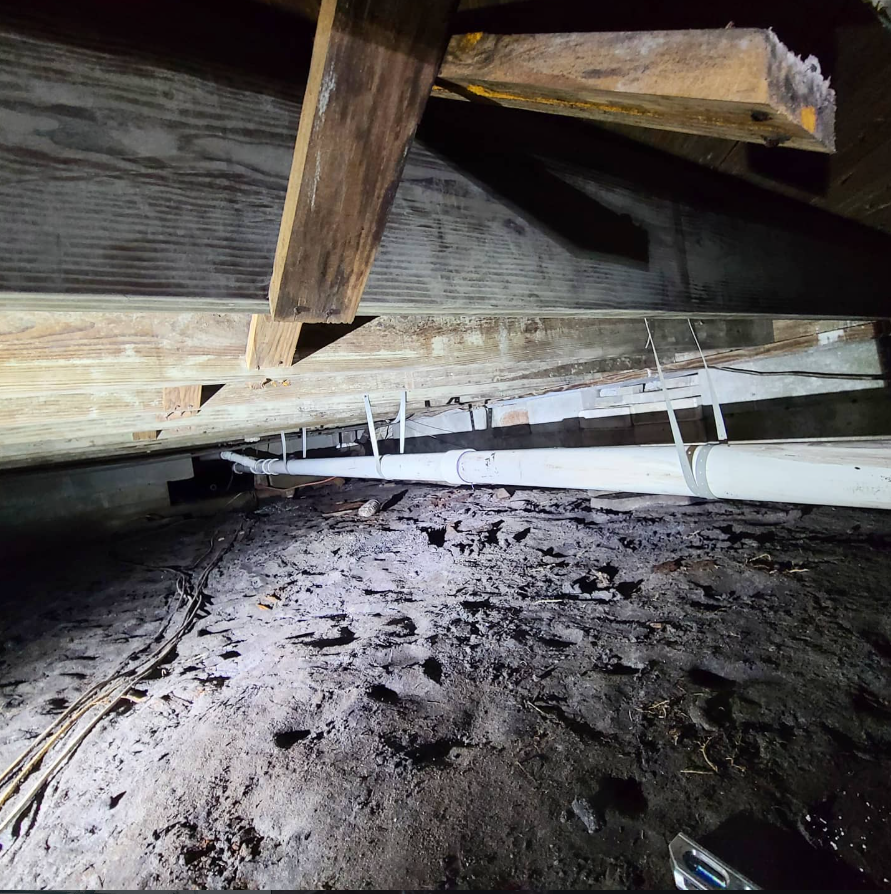

Hydro Jetting in Greater Orlando
Hydro jetting uses high-pressure water to scour buildup from the inside of suitable drain and sewer piping. It can be useful when grease, sludge or recurring buildup is the bigger problem than a simple isolated obstruction.

What to expect
Start with a quick conversation about what you are seeing, how long it has been happening, and whether the issue is active now. From there, the technician can inspect the affected plumbing, discuss findings and outline the next step before work moves forward.
✓ Clear communication
✓ Upfront pricing approach
✓ Licensed & insured
✓ 24-hour availability